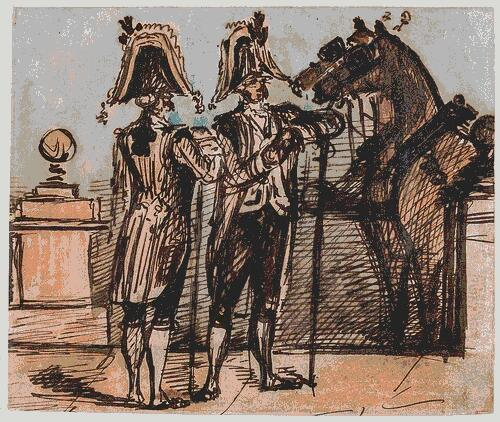
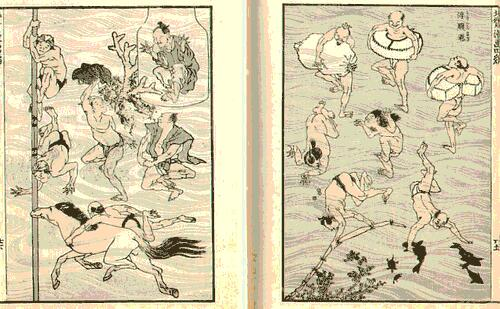
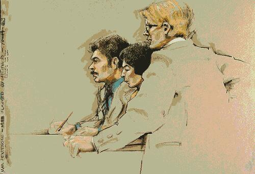
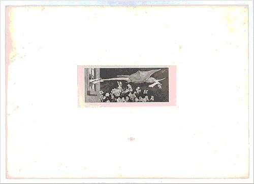
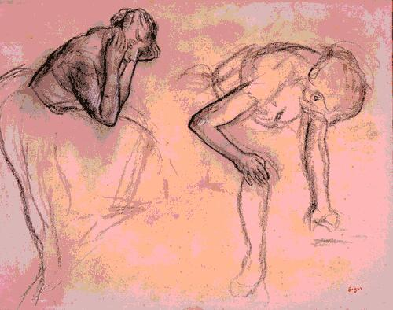

draw or paint, a reading list
Compiled with an AI model (Claude Opus 5.5) from a chat, then sorted. Quotes paraphrased unless in quotation marks. Check before citing. (?) = not sure. Usual answer: drawing is graphite, charcoal, ink, line, paper. Painting is brush, color, surface. True, but thin. Not a thesis here, a reading list. Sorted by the question each item asks.
1. medium — line vs color. The textbook split.
2. time & context — one session in front of the subject vs open time. Capturing an instant vs making an image.
3. relation to the real — rendering the visible vs giving form to the imagined.
4. seeing — drawing as a way of looking, whatever the result.
Even the medium split was never only about material. Line = intellect, design, idea. Color = senses, flesh, seduction.
wikipedia: disegno Disegno vs colore, Florence vs Venice, 16th c. Vasari for disegno (Michelangelo). Lodovico Dolce, Dialogo della pittura (1557), answers for colore (Titian).
wikipédia: querelle du coloris Querelle du coloris, Académie royale, 1670s–1680s. Poussinistes vs Rubénistes. Roger de Piles wins for color.
wikipedia: Ingres Ingres vs Delacroix, 19th c. Same fight, new names. Ingres: « le dessin est la probité de l'art ».
Already here: drawing = thinking, painting = appearing. The medium is a proxy.
Drawing as the trace of an encounter. The subject moves, the light changes, the session ends. The limits are part of the work. Painting (or the finished drawing) as construction: time is open, the image is revised until it fits an intention. French has a word for the first: dessin sur le vif. Also croquis, pochade, sketch, vs étude, tableau.

wikipedia: Nicolaïdes archive.org Kimon Nicolaïdes, The Natural Way to Draw, 1941. A method built on gesture drawing: timed poses, 30 s to 2 min.

wikipedia: Daumier wikipedia: Rodin Historical sketchers of the instant. Rembrandt's ink sketches. Daumier. Rodin drawing dancers without looking at the paper. Degas at the ballet (but see 4.).
wikipedia: Giacometti wikipedia: Final Portrait Counter-case: Giacometti. Endless observation that never finishes. Same model, same chair, for weeks. James Lord kept a diary of sitting for him: A Giacometti Portrait (1965). Film: Final Portrait, Stanley Tucci, 2017.
The sport-like side. Fast, accurate, on the spot, sometimes judged.
urbansketchers.org wikipedia Urban Sketchers, founded 2007 by Gabriel Campanario. Manifesto: draw on location, from direct observation, tell the story of what you see.
pleinaireaston.com Plein air « Quick Draw » contests, e.g. Plein Air Easton (Maryland). About two hours to finish a piece on the spot. Literally a competition.

wikipedia: Topolski wikipedia: Searle wikipedia: Hogarth Reportage drawing. Drawing as witnessing, close to journalism. Feliks Topolski, Ronald Searle, Paul Hogarth. Today: George Butler (conflict zones), Olivier Kugler, Jill Gibbon (undercover at arms fairs).
wikipedia Graphic recording, live scribes. Drawing meetings and talks in real time.
wikipedia: Trisha Brown Performance drawing. The time-bound act is the work. Tony Orrico, Heather Hansen, Trisha Brown.
wikipedia Counter-case: Kim Jung Gi (1975–2022). Huge detailed scenes, live, from memory, no sketch. Speed and performance, but in service of making an image, not capturing one.

Painting (Malerei): complete, harmonious rendering of the visible, color, light. Bound to the world as it is.
Drawing (Griffelkunst, « art of the stylus », includes etching and print): closer to thought and poetry. Without color it can be selective, fragmentary, suggestive. Can show what the visible world doesn't contain: fantasy, ideas, the dark side. Can leave gaps for the viewer. Can work in cycles, like literature.
Klinger's own cycles: Paraphrase über den Fund eines Handschuhes (the glove), Ein Leben, Eine Liebe, Vom Tode. Dreamlike, narrative.
wikipedia: Kollwitz Käthe Kollwitz read the essay. It helped her choose print and drawing over painting.
Baudelaire / Klinger = opposite poles. One: drawing catches the passing real. Other: drawing escapes the real. Both agree that incompleteness is the strength, not a lack.
wikipedia: Valéry Paul Valéry, Degas Danse Dessin, 1936. Loose portrait of Degas, really an essay on drawing. Folio essais, short. Degas, reported: « Le dessin n'est pas la forme, il est la manière de voir la forme. » Valéry: looking at a thing and looking at it while drawing it are not the same. Drawing replaces habitual perception by attention. An act of the mind, not just of the hand.

gutenberg: Moore Degas on memory, paraphrased: copying what you see is fine, drawing what you only see in memory is better. Memory keeps what struck you, the necessary. Free from the tyranny of nature. He imagined (?) an academy with the model on the ground floor and students drawing from memory one floor up, higher each year. George Moore, Impressions and Opinions, 1891: Degas says no art is less spontaneous than his.
wikipedia archive.org: English text Horace Lecoq de Boisbaudran, L'Éducation de la mémoire pittoresque, 1848. Brief observation, then draw from memory. Trained Fantin-Latour, Rodin. The athletic training side. English: The Training of the Memory in Art, 1911.
So a third position: observation = training, memory = filter, studio = where the instant is built. The quick sketch is the exercise, not the product. Only courtroom artists and urban sketchers fuse looking and executing in the same moment.
wikipedia: Berger John Berger, Berger on Drawing (ed. Jim Savage, 2005). Three kinds: drawings that study what is seen, drawings that communicate ideas, drawings from memory. An observational drawing contains the time of looking. Maps onto axes 2 and 3.
Deanna Petherbridge, The Primacy of Drawing, Yale, 2010. Big, historical, drawing as process.
wikipedia: Ingold Tim Ingold, Lines: A Brief History, 2007. Anthropology of the line: walking, weaving, writing, drawing.


_MET_DP334017.jpg){kind=link}